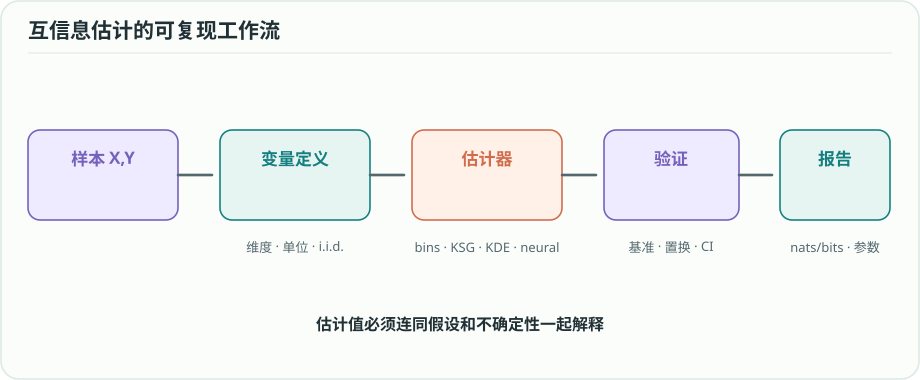
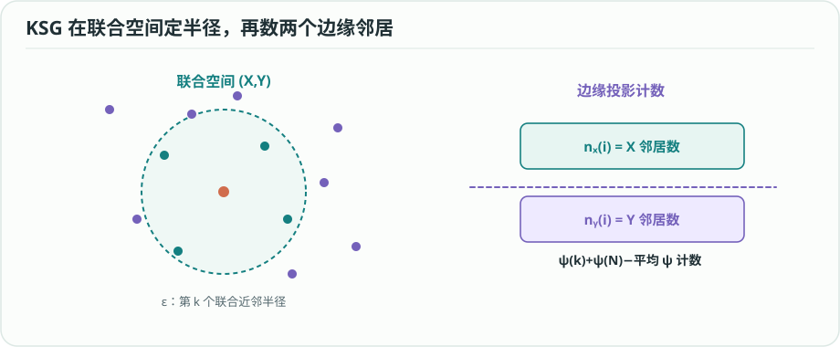

为什么一个 MI 数值不够？
理论里的熵和互信息由真实分布定义；工程里只有有限样本。估计器必须同时面对未观测类别、分箱分辨率、邻域尺度、密度带宽、神经网络容量和随机种子。不同估计器给出不同数值，并不意味着真实互信息随算法改变，而是每个方法都带有自己的统计假设与误差。
本章用一个可解析基准贯穿比较：若 (X,Y) 是相关系数为 ρ 的二元高斯，则互信息为 −½log₂(1−ρ²) bit。它让我们能把估计值与已知真值比较，而不是只凭“某方法的输出更大”判断更准确。

离散经验熵：计数不等于真分布
对 N 个离散样本，经验概率是 p̂ᵢ=nᵢ/N，插件熵估计为 Ĥ=−Σp̂ᵢlog₂p̂ᵢ。由于未观察到的类别被赋予零频率，插件熵在固定有限支持集、样本量足够大等条件下通常向下偏。Miller–Madow 修正给出一阶近似：
K 是观测到的类别数，N 是样本数。该修正不是对任意高维、无限支持或严重稀疏数据的万能去偏器。经验互信息的偏差方向也不同：在独立性原假设下，有限列联表的插件互信息通常呈正偏，且与自由度和样本量相关。
Binning：分辨率与样本量的折衷
连续变量分箱后，计算的是离散化变量 B(X) 与 B(Y) 的互信息，而不是原始连续变量的完整互信息。确定性分箱满足数据处理不等式，因此总体上 I(B(X);B(Y))≤I(X;Y)；但有限样本的插件偏差又可能把估计值向上推，所以实际估计误差不一定只表现为低估。
均匀分箱对尺度敏感；分位数分箱让每箱样本数较均衡，但会改变边界与可解释性。应报告 bin 数、边界策略、是否用训练集确定边界，以及对多个分辨率的敏感性。若你在特征选择中先用全数据选出最高 MI 特征，再在同一数据上评估预测效果，会引入选择偏差；必须把筛选步骤放进交叉验证的训练折中。
KSG：用联合邻域估计边缘计数
Kraskov–Stögbauer–Grassberger（KSG）估计器通过 k 近邻距离估计连续变量互信息，不需要显式拟合联合密度。对每个联合样本点，在联合空间用最大范数找到第 k 个邻居的半径 εᵢ，再分别统计 X、Y 边缘空间中半径 εᵢ 内的邻居数 nₓ(i)、nᵧ(i)。KSG-1 的估计式为：
ψ 是 digamma 函数；上式结果为 nats，除以 ln 2 才是 bits。KSG 的局部邻域自适应于样本密度，但它仍依赖 k、距离范数、变量尺度、样本量和连续性假设。重复值、离散混合变量、强边界效应和高维稀疏都会带来困难；不存在一个对所有维度和分布都“黄金标准”的 kNN 估计器。

KDE：密度估计与带宽敏感性
核密度估计分别拟合联合密度与边缘密度，再用样本平均近似 E[log p(x,y)/(p(x)p(y))]。它直观、可用于低维连续变量，但带宽过小会把噪声拟合成尖峰，带宽过大则抹平依赖结构；高维下联合密度估计的样本需求迅速增长。
比较 KDE 与 KSG 时，必须固定变量尺度、带宽选择规则、核函数、边界修正和样本点的评估方式。若在训练样本本身上评估密度而没有留一法或其他修正，密度自贡献会进一步影响估计。
MINE 与 InfoNCE：下界不等于真值
MINE 利用 Donsker–Varadhan 表示把 KL 散度写成对函数 T 的上确界，并用神经网络参数化 critic。对联合分布 PXY 与乘积分布 PX PY，目标为：
这是总体分布上的下界；实际神经网络训练使用有限样本、有限容量和随机优化，数值估计可能有高方差、优化偏差和 log-mean-exp 稳定性问题，不能把训练得到的一个数直接称为真实 MI。
InfoNCE 把一个正样本与 K−1 个边缘负样本放进对比分类任务，给出互信息下界 I(X;Y)≥ln K−L_InfoNCE（在相应采样假设下）。因此它的上限受负样本数约束，最多捕获 ln K nats；增加负样本会改变界的松紧和计算成本。InfoNCE 是有用的表示学习目标，不是无偏的 MI 测量仪。
三类方法回答不同问题：KSG 是基于邻域的统计估计；MINE 是可学习的变分下界；InfoNCE 是对比分类导出的下界。不能仅按估计值大小给它们排准确度名次。
可信估计的工作流
- 定义随机变量。写明样本单位、变量维度、连续/离散类型、是否 i.i.d.，以及估计的是总体 MI、条件 MI 还是局部 MI。
- 先做可解析基准。用已知相关系数的二元高斯数据验证单位、偏差和实现；理论真值为
−½log₂(1−ρ²)bit。 - 做敏感性分析。改变样本量、k、bin 数、KDE 带宽、网络宽度和负样本数；报告多随机种子分布，而不是只挑一次结果。
- 构造独立性原假设。用打乱配对的置换检验估计零分布；在时间序列中应使用保留自相关结构的区块置换等适当方案。
- 隔离模型选择。特征筛选、超参数选择和显著性检验要放在训练折/独立测试集或预注册流程中，避免数据泄漏。
- 报告单位与不确定性。明确 nats 或 bits、估计器版本、k/带宽/分箱、置信区间或置换 p 值、随机种子与软件版本。
滑块对一组固定的 160 个相关高斯样本重新计算 KSG-1。有限样本估计会随 k 变化；这不是估计器在所有数据上的误差保证。
报告互信息时必须交代什么
- 变量定义、样本来源、样本量、独立性与预处理。
- 估计器、参数、单位（nats/bits）和软件版本。
- 已知基准或合成数据上的校验结果。
- 多参数敏感性、随机种子、置信区间/置换检验。
- 明确区分统计估计值、变分下界和优化目标。
来源与延伸阅读
- Paninski (2003), Estimation of Entropy and Mutual Information：有限样本偏差与一致性条件。
- Kraskov, Stögbauer & Grassberger (2004), Estimating Mutual Information：KSG 估计器。
- Belghazi et al. (2018), MINE: Mutual Information Neural Estimation：Donsker–Varadhan 变分下界。
- van den Oord, Li & Vinyals (2018), Representation Learning with Contrastive Predictive Coding：InfoNCE 与对比预测。
- scikit-learn mutual_info_regression：KNN 互信息估计、k 邻居偏差—方差折衷、重复值扰动与 nat units。